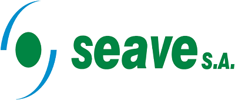

SeaveApp — Privacidad y condiciones de uso
Vigente desde el 2 de octubre de 2026
SeaveApp es una herramienta interna de Seave S.A. para registrar los trabajos de campo del Yacimiento KK-PC. Solo pueden usarla las personas que Seave S.A. habilita expresamente.
Qué datos se registran
- De tu cuenta de Google: únicamente tu dirección de correo, para comprobar que estás habilitado. La app no accede a tu contraseña, tus contactos, tu Drive ni ningún otro dato de tu cuenta.
- De tu usuario: el nombre y el rol que te asignó el administrador.
- De los trabajos que cargás: pozo o ubicación, tipo de trabajo, fecha y horario, cuadrilla, nombres de los integrantes del turno, orden de trabajo, detalle, notas de seguridad, fotos y documentos adjuntos.
- Registro de actividad: qué usuario creó, modificó, aprobó o anuló cada trabajo y cuándo.
Para qué se usan
Para llevar el registro de los trabajos realizados, su aprobación por supervisión y la emisión de los partes diarios y mensuales que Seave S.A. presenta a la operadora. No se usan con fines publicitarios ni se venden o ceden a terceros ajenos a esa finalidad.
Dónde se guardan
En una carpeta de Google Drive de Seave S.A. de acceso restringido. Una copia de los trabajos recientes queda guardada en tu teléfono para que puedas trabajar sin señal; se borra al cerrar sesión.
Quién puede verlos
Los usuarios habilitados de SeaveApp, según su rol, y la administración de Seave S.A.
Condiciones de uso
- El acceso es personal: no compartas tu cuenta ni cargues trabajos a nombre de otra persona.
- Los datos que cargues deben ser veraces; quedan asociados a tu usuario.
- Si perdés el teléfono o dejás de trabajar para Seave S.A., avisá para que se dé de baja tu acceso.
Consultas, corrección o baja de datos
Escribí a administrador@seavear.com.